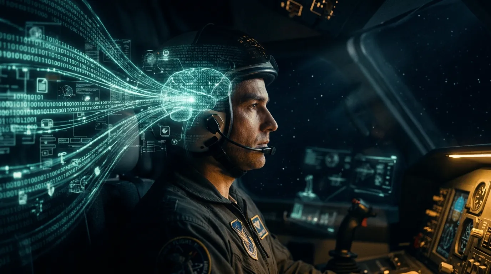

Human Performance & Limitations · Module H — The Mind AloftInformation Processing
Chapter 19 — How the pilot's mind takes in the world and acts on it: what aviation psychology is, why human error is inevitable, mental workload, and the information-processing model from sensory input to response.
BookHuman Performance & Limitations
AuthorCapt. Pankaj Pahil
ExamDGCA CPL / ATPL — HPL
Chapter19 of 26 · Module H

CINEMATIC PLATE 19.0 — pending generation (Banana Pro)Prompt Fig 19.0 (The Mind Aloft hero).
Plate 19.0 — The mind aloft. Every switch, call and decision passes first through the narrow channel of human attention.
1. Introduction to Aviation Psychology
What this section covers
Definition of aviation psychology, its aims, and how its tools support flight safety and efficiency.
Aviation Psychology is a specialty in applied psychology that focuses on understanding human behaviour, emotions and mental states as they relate to the operation and control of aviation systems and their influence on the safety and efficiency of flight.
The aim of aviation psychology is to understand and to predict the behaviour of individuals in an aviation environment. Its study is aimed at improving safety, efficiency and comfort.
Practitioners of aviation psychology bring the tools and techniques of psychology to bear in order to describe, predict, understand and influence the aviation community to achieve those aims.
Exam Tip — The Four Action Verbs
Remember the four practitioner verbs: D – P – U – I → Describe, Predict, Understand, Influence.
2. Human Error & Human Reliability
What this section covers
The inevitability of human error and the four areas where pilot errors usually originate.
It has long been accepted that human errors are inevitable. The majority of pilot-related errors are considered to be failures of:
Interpersonal skills
Communications
Decision-making
Leadership
This does not mean that the frequency of error cannot be reduced, or that the effects cannot be avoided or mitigated.
Golden Maxim — "Superior Pilot""A superior pilot uses his superior judgment to avoid situations that would require his superior skills."
Figure 19.1 — The origins of pilot error: interpersonal skills, communication, decision-making and leadership, all trapped by good judgment.
3. Workload
What this section covers
Cognitive (mental) workload definition, the four task factors that drive it, indirect factors and observable symptoms.
Workload = the amount of mental effort needed (and expended) to process information. Here we discuss cognitive (mental) workload, as opposed to physical workload. Workload is linked to almost all other areas within cognition and performance, particularly attention, vigilance, fatigue, decision-making and multi-tasking.
Effects of High Workload
High workload is associated with increased errors, fatigue, task degradation and poor performance.
3.1 Four General Task Factors Affecting Workload
'Difficulty' of the task
Number of tasks running in parallel (concurrently)
Number of tasks in series (switching from task to task)
The time available for the task (speed of task)
Indirect factors also play a role: duration of task, fatigue and level of arousal.
3.2 Symptoms of Increasing Workload
Attention and task focusing
Task shedding and re-prioritization
Implications for Situation Awareness
Increased use of decision short-cuts and less scrutiny or review
Increased fatigue and chance of error
The area that deals with all such activity is called the working memory ('Information Processing').
Exam Tip — Workload Drivers
Mnemonic "DPST" — Difficulty, Parallel tasks, Series switching, Time available.
4. Information Processing — A Functional Model
What this section covers
How sensory inputs are converted into reasoned actions through five mental stages, and the central role of working memory.
We receive information from the world around us through our senses: sight, hearing, touch, smell and taste. The "Gestalt laws" formulate basic principles governing how objects are mentally organised and perceived.
Figure 19.2 — The information-processing model: sensory input → detection → perception → decision → response, with feedback.
4.2 The Brain — Central Decision Maker & Response Selection
Once information has been perceived a decision must be made as to the response. Information is continuously entered into and withdrawn from both long-term and short-term memories to assist the decision process. The decision involves input, processing, actions and feedback. The information comes from many sources and requires conscious processing in working memory. A problem at any stage of information processing could affect the outcome.
To carry out multi-tasks we must learn skills through Motor Programmes.
4.3 Stimuli
The senses provide stimuli to our brain which has the ability to retain them for a short time, from the time they arrive. We may not have the processing capacity to deal with them all.
Exam Tip — First Stage
First stage in the information process = Sensory stimulation (not "Attention", not "Perception"). Detection is what follows.